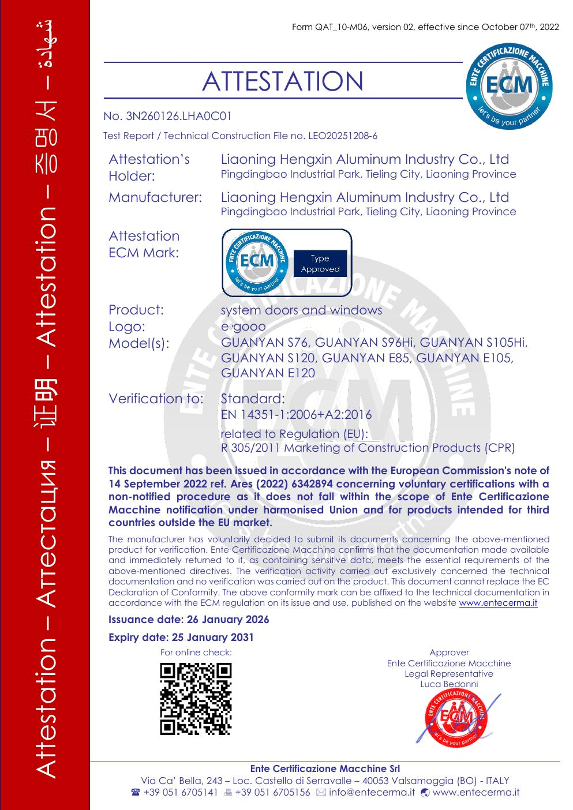

Product Innovation
Thermal breaks, edge insulation and passive-window platforms reduce unwanted heat transfer.

Long-life window and door systems for lower-loss buildings, quieter rooms and durable residential envelopes.
E-GE sustainability communication focuses on product innovation, environmental responsibility, long-life materials, social value and transparent certification content.
Thermal breaks, edge insulation and passive-window platforms reduce unwanted heat transfer.
Durable aluminum systems and improved building envelopes support lower energy loss over long service cycles.
Dealer training, installation clarity and catalogue transparency help overseas partners deliver consistently.
Enterprise honors, manufacturing recognition and practical patents strengthen product trust for long-term residential projects.
Downloadable certification documents are organized here for project review, partner communication and market-specific technical checks.
Passive House certification materials support low-energy and high-performance building projects.

CE documentation is available for partner review and European project communication.
Open CE certificate PDFCertificate PDFs and supporting notes are kept separate from the homepage for clearer review.